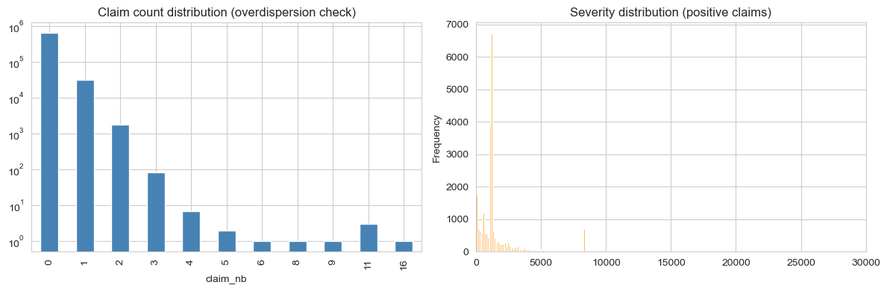
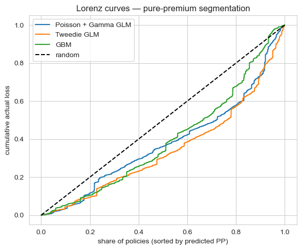

Summary
On the canonical freMTPL2 French motor third-party liability dataset, a Tweedie compound-Poisson GLM beats both a separately-fit Poisson + Gamma GLM and a gradient-boosted challenger on the standard segmentation metric (Gini coefficient on policy-level pure premium). But Poisson + Gamma wins on a different operationally-meaningful metric — top-decile lift — and remains the more defensible choice when frequency and severity drivers diverge. The "right" pricing model is the one whose biases match how the rating engine and underwriting team will actually use the score.
The business question
A motor insurer wants policy-level expected-loss estimates — the pure premium — accurate enough to feed a tier-pricing engine and explainable enough for actuarial sign-off. Two operational uses sit on top of the score:
- Pricing. Each policy needs a number that, in expectation, covers its losses plus margin. Errors translate directly to underwriting profit (or loss).
- Segmentation. The actuarial team wants to identify and charge appropriately for the riskiest decile, where most of the loss concentrates.
An incumbent Poisson GLM was already in production (industry-standard). The question: would Tweedie or an ML challenger meaningfully improve either dimension?
Data
Real freMTPL2 from the French Federation of Insurers, redistributed via Kaggle as floser/french-motor-claims-datasets-fremtpl2freq (claims) and floser/fremtpl2sev (severities). After joining and capping severities at the 99.9th percentile (standard practice to limit catastrophic-claim distortion):
- 678,013 policies, ~5% had at least one claim during their exposure window.
- Mean frequency rate ~0.10 claims/year/policy; mean positive-claim severity ~1,500 EUR.
- Covariates:
exposure,area,veh_power,veh_age,driv_age,bonus_malus,veh_brand,veh_gas,density,region.
EDA & overdispersion
Two empirical facts dominate the modelling decision:
- The claim-count distribution is heavy on zero. Almost 95% of policies file no claims. Of those that do, most file exactly one — the long tail of two-or-more is genuinely small.
- Severity is heavy-right-tailed. Most positive claims are small (~1k EUR), but a long tail extends to the per-policy cap. Modelling severity in linear space without a log-link is a non-starter.

The empirical variance-to-mean ratio of claim count is 1.083. Mild overdispersion — Poisson is a defensible baseline, but a negative-binomial or Tweedie family captures the extra variance more cleanly.
Modelling approach
Three modelling families on the same 80/20 train/test split. All trained with offset = log(exposure) for frequency, and severity restricted to positive claims. Pure-premium predictions are made on the test set with frequency and severity combined where they live in separate models, or directly where they don't.
1. Poisson + Gamma GLMs (industry baseline)
The classical actuarial decomposition: model claim frequency with a Poisson GLM (log link, exposure offset) and conditional severity with a Gamma GLM on positive claims. Pure premium = E[N|X] / exposure × E[Y|X, N≥1]. Easy to interpret per-coefficient; easy for the rating engine to consume; easy to explain to a regulator.
2. Tweedie compound-Poisson GLM
A single model on the per-exposure pure premium target with a Tweedie(var_power=1.5) distribution and log link. Handles the zero-inflation and the positive tail in one fit. Exposes a cleaner story: a single set of coefficients on the same response. The trade-off is that frequency and severity are no longer modelled separately, so a coefficient can't be split into "this driver is more likely to file" vs. "this driver files larger claims."
3. Gradient-boosted regressor (challenger)
A pair of GradientBoostingRegressor models — one on the per-exposure frequency, one on log-severity — multiplied to give pure premium. No monotonicity constraints (a production system would add them on bonus_malus), no interaction priors. The point is to see what the methodology family picks up that the GLMs miss.
Results
80/20 hold-out. Two metrics:
- Gini coefficient on pure premium — a measure of how well the model rank-orders policies by realised loss. Higher = better segmentation.
- Top-decile lift — among the 10% of policies the model thinks are riskiest, what's the realised loss multiple over the population mean? Higher = more concentrated risk capture in the highest tier.
| Model | Gini (PP) | Top-10% lift |
|---|---|---|
| Tweedie GLM (var_power = 1.5) | 0.310 | 2.52 |
| Poisson + Gamma GLM | 0.241 | 2.66 |
| GBM (Poisson + Gamma) | 0.211 | 1.45 |

Trade-offs
- Tweedie's coefficient story is unified but less granular. Each coefficient affects pure premium directly; you lose the actuarial habit of decomposing a tier change into "more claims" vs. "bigger claims." If your team thinks in those terms, Poisson + Gamma stays clearer.
- Poisson + Gamma compounds two model errors. Pure premium = freq × severity, so any bias in either propagates. Tweedie sidesteps this by jointly fitting.
- The GBM is the weakest of the three on this data. Without monotonicity constraints it's also the hardest to defend — a production version would add them on
bonus_malusand possiblydriv_age, and would likely close most of the Gini gap. Held as a research artifact, not a production candidate. - All three under-segment the heaviest tail. A 5% claim-rate dataset rewards models that can find the rare-loss policies; even Tweedie's 0.31 Gini means the model is far from a perfect ordering. This is a feature-set ceiling, not an algorithm ceiling — adding a telematics signal or finer geographic rating would matter more than swapping models.
Deployment sketch
For the rating engine and the actuarial team:
- Scoring artifact. Export the Tweedie coefficients as a CSV, plus the GBM as a pickled model. The rating engine evaluates both and returns the (configurable) winning prediction; an A/B-test slot lets the team compare them on live cohorts.
- Actuarial memo. Partial-dependence plots for each covariate (especially
bonus_malusanddriv_age), calibration tables binned by predicted-decile, and Lorenz curves on rolling cohorts. - Drift monitor. Monthly Gini on a holdout cohort; alert if Gini falls below 0.25 over a 60-day window. Annual full refit; quarterly review.
- Fairness audit. Per-driver-age-decile and per-region calibration tables — flagged for actuarial review whenever the test-cohort calibration error exceeds 5%.
Lessons
- Pick the metric your downstream consumer actually uses, then pick the model. Tweedie wins overall Gini; Poisson + Gamma wins top-decile lift. If your rating engine bins into tiers, the right answer is not the higher-Gini model.
- Mild overdispersion is not Tweedie-mandatory. Var/Mean = 1.083 means Poisson isn't badly mis-specified. Tweedie's win is real but modest; the real differentiator is the modelling-philosophy fit (one model vs. two).
- GLMs still beat unconstrained ML on this kind of data. Without monotonicity priors and feature regularisation, a GBM is structurally too flexible for the signal-to-noise ratio of motor insurance. The right ML deployment in this domain is monotonic-constrained boosting plus calibration — the unconstrained version is a research point, not a production lift.